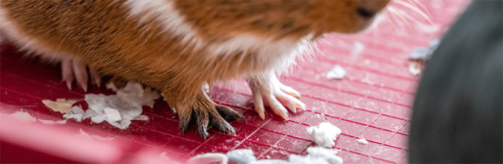

A gray, bespectacled old man, in a voice that was quiet and timid, suggested to the audience of animal breeders and geneticists that he had perhaps overworked the word balance. “Poise,” he proffered, might have been better—to be poised implies a constant readiness to shift, to make leaps.1 That’s how evolution worked to Sewall Wright.
It was 1977, and the 88-year-old world-renowned evolutionary biologist was speaking to the assembly at the annual meeting of the American Society of Animal Science. But Wright’s daring ideas about evolution had coalesced when he was a much younger man, confronted with what he saw was a major gap in Charles Darwin’s theory of natural selection: How organisms could evolve new and better features when transitional, interim changes would make them less fit.
Nautilus premium members can listen to this story, ad-free.
Nautilus members can listen to this story.
As an evolutionary biologist, I can’t go far in my work without tripping over an insight from Wright. But his work’s importance crystalized on the world health stage when strange new mutations of the COVID-19 virus began emerging. When, in 2022, the Omicron variant rapidly replaced the original variant due to its higher infectivity, researchers discovered that this superpower had actually resulted from a series of about nine mutations that initially reduced its infectiousness.2 How did a virus that was initially less infectious persist long enough to obtain the next mutations to become even more infectious than the original variant?
The first inklings of an answer to this contemporary question came to Wright more than 100 years ago, when he met a guinea pig with an unusual number of toes.
Nowhere does there exist a pig with wings, a bird with antlers, or a frog species with six legs.
Wright had been interested in evolution since he was a teenager, having read Darwin’s On the Origin of Species for the first time in high school. Unlike Darwin, who admitted to being terrible at math, Wright was remarkably gifted at numerical feats. He could extract cube roots by 8 years old; when his teachers found this out on his first day of school, they paraded him in front of the eighth-grade boys, asking him to perform the trick on the chalkboard that he could barely reach. This won him few friends, and Wright afterward refrained from speaking out much in class. Wright would carry on being known as shy and reserved for much of his life.3
His formal biology training was at Lombard College in Illinois under the tutelage of Wilhelmine Key, one of the first women to receive a doctorate in biology from the University of Chicago. From her, Wright discovered for the first time that evolution, statistics, and genetics were all intertwined, and that he could apply his mathematical skills to big questions in biology.
Under her insistence that Wright pursue graduate school, he went on to work in the lab of the famous geneticist William Ernest Castle at Harvard University’s Bussey Institute. There he took over management of a thriving colony of guinea pigs, housed in a gothic-style mansion in Boston.4 In the early 1900s, guinea pigs were still the lab animal of choice, not yet replaced by mice and rats.
Wright’s work with the guinea pigs would set him on a path that would ultimately lead him to depart with his contemporaries and to propose a radical new theory of evolution. Most biologists since Darwin had thought about evolution as a process of gradual improvement, natural selection acting on slight differences between individuals. But for Wright, evolution was about how organisms leap between optimal states of adaptation, crossing dangerous valleys of low fitness in the process.
There are a lot of ways to build an animal. The biodiversity of our planet is a testament to this. But if you imagine an organism as a fully constructed Lego toy, consider all the ways those individual bricks could be reassembled to build a wholly new thing. The entire range of possible assemblies is vast and yet the living world occupies only a tiny fraction of this design space. Nowhere does there exist a pig with wings, a bird with antlers, or a frog species with six legs.

TEACHER'S PET: Evolutionary biologist Sewall Wright kept his guinea pig study subjects close at hand (literally—he would bring them to his lectures) throughout his career; they had served as inspiration for his grand theory of evolution that helped explain what he saw as a hole in Darwin's ideas around natural selection. Credit: Hanna Holborn Gray Special Collections Research Center, University of Chicago Library.
One reason, first hinted at by Darwin, is that certain assemblies simply work better in their environment than others. These configurations allow organisms to survive and reproduce, passing on their specific Lego blueprint to the next generation. Once an organism has arrived at a structure that does well in its environment, randomly swapping some pieces are more likely to cause harm than further improvement.
But what if swapping a dozen pieces in a precise way would be transformative in making that organism perform far better in their environment? But any individual swaps would result in a worse-off animal. So, how do you reach the vastly improved one? This is a kind of Darwinian paradox—changing each piece one-by-one reduces the integrity of this Lego critter, and so natural selection, the force at work here, should remove those changes, preventing the necessary dozen steps from ever being taken to reach the far better configuration just on the other side of the unfit valley. How is evolution not forever stuck in this suboptimal state? A long-running experiment provided Wright just the right small subjects to find out.
The name Experiment B—conducted in a government lab in Beltsville, Maryland, for the now-defunct Bureau of Animal Industry—holds an aura of secrecy and intrigue. If you had visited the facilities, you would’ve been greeted by a dual assault on your senses: first, your nose at the sharp aroma of alfalfa hay, wood chippings, and urine, then your ears by a cacophony of shrieks, whistles, and whines.
Over the course of two decades, the experimental station housed more than 80,000 guinea pigs. The colonies were established in 1906 in response to the Bureau’s mission to uncover the effects of inbreeding on the nation’s livestock. Since the late 1700s, it had become common practice for farmers to tightly control the mating of their herds, permitting only those that produced a lot of milk, grew muscle rapidly, etc., to breed. In doing so, their herds became increasingly uniform. Brothers would be mated with sisters, daughters with fathers, whatever it took to keep the optimal traits in the herd. Concerns about the negative side-effects of agricultural inbreeding practices had been mounting for decades—even Darwin himself wrote about them in his little-known book, The Effects of Cross and Self-Fertilization in the Vegetable Kingdom—and the United States government decided there needed to be a large-scale experiment conducted to survey the full range of health implications.
So in 1911, a few hundred guinea pigs were chosen to establish a colony with strict brother-sister mating, kicking off Experiment B. A few dozen family lines were maintained in this way, and health impacts measured every generation. Records were kept of their color patterns, litter size, and weight, and they were exposed to tuberculosis and other pathogens to test resistance. In just a few years, Experiment B had produced a massive database of information—all they needed was a skilled statistician to analyze it all.
He wondered if this extra toe could be selected to grow normally across successive generations.
At the time, Wright happened to be learning the ropes of guinea pig genetics up in Boston. In his care were the “BB” stock of intensely black guinea pigs, and the “BW” stock of a mix of black and albino piggies. There were tricolors with spots of yellow, rough coats and smooth coats, cream-colored ones, and the red-eyed stock. Each stock delineated by coat color, pattern, and roughness, and given labels of predicted genotypes. All of these varieties were common among guinea pig breeders and can be found at any pet store. But one of the lines stood out.
Guinea pigs belong to the family Caviidae and are characterized by having four toes on their front feet and only three toes on their back. But in 1906, Castle had discovered one of his pups was born with an extra toe on its back foot. It was a flimsy thing with no bone or muscle—just an atavistic vestige. And yet, he wondered if this extra toe could be selected to grow normally across successive generations.
The result was a unique four-toed stock now in Wright’s care. Scooping up one of these piggies, using his thumb to separate the toes, he marveled at this perfect oddity. In only a few generations of selection, here was a guinea pig with four completely normal toes on its back feet. Something no caviid was supposed to have.
How did this happen? Was it the result of one gene, two genes, 50 genes? In 1912, no one really knew what a gene even was—the physical structure of DNA wouldn’t be elucidated for another four decades. The only way to investigate heredity was through carefully designed crosses and detailed statistical analysis over many generations. Not much differently than Gregor Mendel had a half-century before.
For the next three years at Harvard, Wright dedicated himself to uncovering the secrets of heredity in Castle’s guinea pigs. His most dramatic success there was not in the toe department but in working out the genetic basis of albinism. In guinea pigs, albinism isn’t an all-or-nothing trait—there’s an almost continuous gradation from intense black to white. While many people at the time thought that traits were determined by just one or a few genes acting independently of each other, Wright discovered that this continuity was due to a complex gene interaction system. Some genes determined the color, while others determined how strong the color would be, with some having versions of the gene, alleles, that were dominant or recessive to other versions. He would later uncover a similar phenomenon with toe number—to shift from three to four toes required crossing a developmental threshold by possessing unique combinations of many alleles.4
This would be the first important lesson that guinea pigs would teach Wright: Nothing in biology is simple. Even seemingly simple traits such as “color” are determined by an exquisitely complex system.

THIS LITTLE PIGGIE: In the 1910s, Sewall Wright met a guinea pig with an unusual number of toes. It showed him that evolution's progress is rarely as straightforward as many scientists of the time thought. Photo by Lost_in_the_Midwest / Shutterstock.
Wright graduated with his Ph.D. from Harvard in 1915, and, under the recommendation of Castle, accepted a position at the Bureau of Animal Industry to analyze the abundant data that had accumulated from Experiment B and to help guide the guinea pig breeding program there.2 The guinea pig stock was much different than it was at the Bussey, however, which had bred for diversity of stock. All the family lines were genetically homogenous just like highly inbred cattle.
But there was something curious about these lines in Maryland. There were 23 family lines, all descendants of the same breed of guinea pig, and all inbred. And yet, each line was remarkably different from the other. One line had very short legs that made them look as if they were gliding across the ground. Another was almost entirely white, while another only had a smear of white on the snout. Some had little rounded noses with bent ears, while others had pointy noses with erect ears. It appeared to Wright that there was more variation between each of these inbred lines than there was in the original breed.1
He realized that by isolating each family line from the other, it revealed a kind of hidden reservoir of variation. In large populations, certain combinations of genes, especially if alleles are at very low frequency, are highly unlikely to occur. But in small, isolated populations, the probability of rare gene combinations increases substantially. In the Lego building blocks analogy, say a box has a dozen or so colors of blocks, but the red block is by far the most common. If you draw from this large box randomly, you’ll almost always get a creature made of red blocks. However, if you pour the blocks from this large box into many smaller tubs, by chance, some of the rarer colors will be overrepresented in one or more of these smaller tubs. Now, by drawing blocks from each isolated tub separately, you increase the chance of pairing blocks of many different colors other than the dominant red one. If each generation these Lego creatures are constructed by a limited number of draws from each tub, then, over time, the proportion of colors will change in each tub by chance.
In this way, each small, isolated guinea pig family line appeared to have moved through the adaptative landscape by dumb luck of the Lego brick pour—or genetic drift—in its own unique trajectory, and it did so rapidly because the pens held only a few individuals.
Nothing in biology is simple.
At the Bureau, Wright also had access to centuries worth of livestock records, including detailed pedigrees. In studying the history of the shorthorn bull, he learned that most all of the prized bulls descended from a single cow named Favourite. Her descendants with their desirable traits were then shipped to other herds all over the country, no doubt fetching high prices, to infuse the local herds with their genes. At least to the farmer, this led, ultimately, to the improvement of the entire shorthorn breed.1
Wright realized something that, in retrospect, seems obvious, but had never been applied to evolutionary thinking before. Farmers have their own isolated herds each experiencing drift in their own unique directions until one of them stumbles upon a highly desired trait—like that found in Favourite and her offspring. Only then do farmers select for those prized traits to percolate through the rest of the stock, rapidly reshaping the breed as a whole. In evolutionary terminology, the shipping around of animals between herds is the gene flow. In nature, it happens when occasionally organisms migrate between otherwise isolated populations, bringing with them their unique gene combinations.
By the time Wright was offered a professorship at the University of Chicago in 1925, all these ideas had begun to coalesce in his mind—the gene interaction systems of coat color, hidden reservoirs revealed by isolation, and the shipping of new traits between isolated populations.2 While all these things were artificial, driven by the whims of human breeders, Wright wondered if there wasn’t a parallel of this in nature. After all, Darwin had been inspired by how breeders “artificially selected” traits, which ultimately led him to conclude nature could do the same thing.
All the pieces are on the table, scattered and disorganized, disconnected observations from the career of one man. Now at the University of Chicago, guinea pigs in tow from Maryland, Wright sat down to flesh out his own theory of evolution. It first appeared in 1931 in a landmark paper titled “Evolution in Mendelian Populations.”5 In it, he imagined all collections of various advantageous traits like peaks on a rugged landscape separated by treacherous, less-fit valleys. In his “adaptive landscape” metaphor, some summits were higher than others, and there was, somewhere in this landscape, the tallest mountain—the optimal fitness peak.
Perhaps a population of guinea pigs has been stranded on a suboptimal peak of fitness, having a mere three toes on each rear paw when four might be optimal. They can get by well enough, but their adaptations are not the optimal combination. Wright asks us to imagine, however, that instead of one big population, we in fact have lots of small, isolated ones—our guinea pigs are in separate pens, or, in their natural environment, scattered across the Andes, rarely in contact. This is the state of most organisms, which are limited in how far they can travel in their lifetime. Even really big populations, such as mosquitoes or fruit flies, experience some degree of localized inbreeding. Not to the same extreme as the captive guinea pigs, but enough that it might expose hidden variation.
Occasionally, evolution takes random walks through the landscape of mutations.
Because these local populations are fairly small, chance starts to play a larger role in their gene frequencies. These populations diverge from each other, just like the guinea pig lines in Experiment B. So long as the novel combinations aren’t too harmful, genetic drift allows local populations to slip off the peaks of fitness, acting counter to natural selection. This temporarily reduces fitness in the isolated population, but it opens the door to exploring neighboring peaks, which might offer far higher fitness—they’ve made the dozen swaps and reached the top of the ideal mountain of four toes. But now only this population of guinea pigs has arrived—the rest are still scattered throughout the landscape in the suboptimal three-toed state.
But migrant guinea pigs, with their superior four toes, travel to other populations, like prized shorthorn bulls being shipped to other herds, seeding within local populations their winning combination features. Evolution has escaped the suboptimal state.
This was Wright’s wild insight, which he called the shifting-balance theory of evolution.
The name “Sewall Wright” haunts the bibliography section of every scientific paper I’ve ever written. Indeed, he became one of the most prolific and influential biologists of the 20th century. But most biologists engage with his ideas in isolated fashion. A conservation biologist might use his “F-statistics,” which measure the amount of inbreeding an endangered species is experiencing. Wildlife biologists studying animal dispersal rely on many of Wright’s mathematical models of gene flow. Laboratory biologists have used Wright’s work to understand the influence of genetic drift on their test-tube organisms.
But Wright’s contributions to each of these topics were not formulated in isolation. To him, each piece was a component of his overarching theory of evolution. To get there, he had needed to draw from the interactions between complex genetic systems, natural selection, genetic drift, gene flow, and mutation. By integrating all these factors of evolution, he developed a holistic theory that, to him, explained the great mystery of how organisms can reach new peaks of fitness.
The legacy of his shifting-balance theory is currently a contentious one among us population geneticists. Some researchers have argued that it lacks broad empirical support and is overly complex6; others contend its strength lies in this complexity, and that its support is growing.7, 8 To return to the Omicron variant, one hypothesis proposed for the “valley crossing” was that the virus was evolving in an immunocompromised individual, therefore weakening selection by the immune system against the virus, allowing genetic drift and mutation to pull the viral population within the infected host through a fitness valley.9 Once the new fitness peak of high infectivity was realized, it then rapidly spread from the host to other healthy individuals, eventually replacing the previous variant.
But the lesson I take away from Wright is that evolution doesn’t need to proceed methodically, one step at a time, always uphill, solely by the action of natural selection. Sometimes, it stumbles down the cliff. Others, it leaps to the top. And occasionally, it takes random walks through the landscape of mutations. As Wright once remarked, species are poised for all kinds of change. The paths of big ideas themselves often aren’t that different.
Wright’s love for guinea pigs persisted throughout his life, and he reveled in the opportunity to smuggle a piggie into a lecture hall. He was not a terribly engaging speaker, and most of his students remember him as a kind of absent-minded genius. One day, the story goes, Wright tucked a particularly squirmy guinea pig under his arm where he often held his eraser as he scrawled equations onto the blackboard. Having made an arithmetic error, he reached for his eraser.
Guinea pigs, it turns out, have uses beyond teaching us about evolution. 
Lead image: Arcady / Shutterstock
References
-
Wright, S. The relation of livestock breeding to theories of evolution. Journal of Animal Science 46, 1192-1200 (1978).
-
Moulana, A., et al. Compensatory epistasis maintains ACE2 affinity in SARS-CoV-2 Omicron BA. 1. Nature Communications 13, 7011 (2022).
-
Provine, W.B. Sewall Wright and Evolutionary Biology University of Chicago Press (1986).
-
Crow, J. Sewall Wright, the scientist and the man. Perspectives in Biology and Medicine 25, 279-294 (1982).
-
Wright, S. Evolution in Mendelian populations. Genetics 16, 97-159 (1931).
-
Coyne, J.A., Barton, N.H., & Turelli, M. Is Wright’s shifting balance process important in evolution? Evolution 306-317 (2000).
-
Wade, M.J., & Goodnight, C.J. Wright’s shifting balance theory: An experimental study. Science 253, 1015-1018 (1991).
-
Chouteau, M., & Angers, B. Wright’s shifting balance theory and the diversification of aposematic signals. Plos One 7, e34028 (2012).
-
Chaguza, C., et al. Accelerated SARS-CoV-2 intrahost evolution leading to distinct genotypes during chronic infection. Cell Reports Medicine 4, 100943 (2023).
References
- Original Article: https://nautil.us/evolution-and-guinea-pig-toes-1217063/